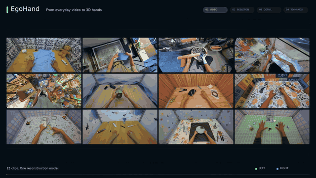
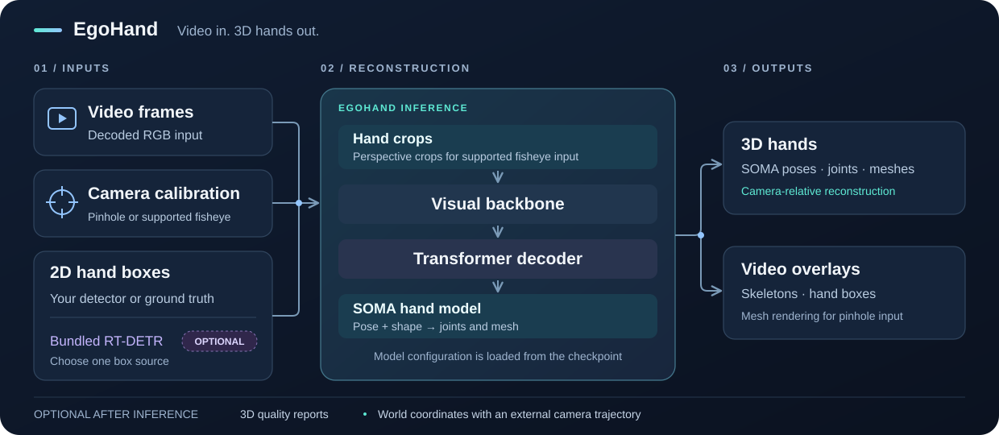
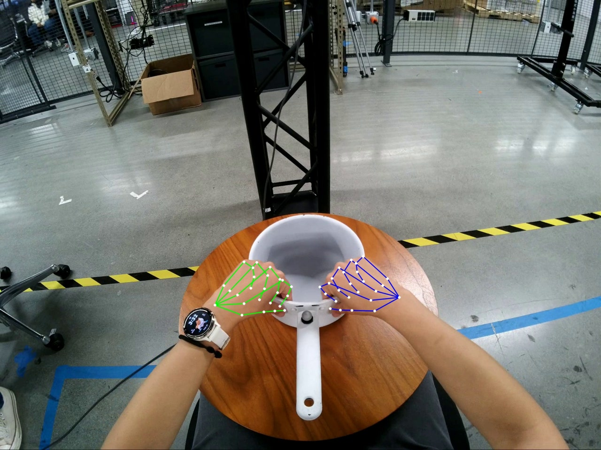
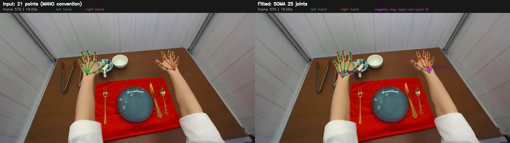

EgoHand#
EgoHand reconstructs SOMA hand poses, 3D joints, and meshes from egocentric video, camera calibration, and 2D hand boxes. It runs directly on decoded video frames, and the code lives in src/python/isaaccapture_egopost. The method is described in the EgoHand paper.


Video, skeletons, hand detail, and 3D meshes.#
The EgoHand pipeline supports integration with any SLAM or camera localization algorithm (e.g., NVIDIA ViPE) to produce hand reconstructions in world coordinates.


EgoHand inference pipeline.#
To capture egocentric video with a camera, see Cameras.
Setup#
System requirements#
Component |
Requirement |
|---|---|
OS |
Ubuntu 24.04 |
GPU |
NVIDIA RTX 6000 Ada Generation, L40, L20, or RTX PRO 6000 Blackwell |
Memory |
32 GB |
Storage |
25 GB |
Clone and install#
git clone https://github.com/NVIDIA/IsaacCapture.git
cd IsaacCapture/src/python/isaaccapture_egopost
uv venv .venv --python 3.12
uv pip install --python .venv/bin/python torch
uv pip install --python .venv/bin/python -r requirements.txt
# Install the pinned DINOv3 implementation (requires Git)
uv pip install --python .venv/bin/python --no-deps -r requirements-dinov3.txt
.venv/bin/python -c "from dinov3.models.vision_transformer import DinoVisionTransformer"
Run EgoHand commands on this page from src/python/isaaccapture_egopost/.
Prepare your inputs#
Input |
What you need |
|---|---|
Video |
An |
Camera calibration |
A JSON file in the format described in Camera input formats. |
2D hand boxes |
Saved boxes from your own detector or ground truth, or the optional RT-DETR detector. See 2D Hand Boxes. |
EgoHand checkpoint |
The default EgoHand-v1
checkpoint ( |
SOMA-X hand assets |
Hand rig assets download automatically from nvidia/SOMA-X and are cached locally. They are needed even with a local checkpoint or your own boxes. |
Check out the example of EgoHand running on a video from the NVIDIA Video-to-Data Challenge.
Model weights#
The model weights are hosted on Hugging Face and ready to be downloaded.
Model |
Used when |
|---|---|
Reconstructing with the default checkpoint, including runs with your own boxes. |
|
Detecting hand boxes with the optional detector. |
To run without network access, download the weights in advance and pass the
local files: --egohand_ckpt for the EgoHand checkpoint, and weights in the
detector config for RT-DETR (see Use the optional RT-DETR detector):
.venv/bin/hf download nvidia/EgoHand-v1 egohand_s060000.ckpt --local-dir weights
.venv/bin/hf download nvidia/RT-DETR-Hand-Detector-v1 hand_detector.onnx --local-dir weights
Anonymous downloads have lower rate limits. If you hit 429 Too Many
Requests, sign in with .venv/bin/hf auth login (or set HF_TOKEN), or
use local copies. A 401 Client Error on these public repositories usually
means a stale or invalid stored token; run .venv/bin/hf auth logout or unset
HF_TOKEN.
For offline or restricted hosts, download the SOMA-X assets once and pass
--soma_hand_assets /path/to/assets. The directory must contain:
SOMAHand.npz
SOMA_neutral.npz
SOMA_template_rig.usda
SOMA_procedural_transforms.json
MHR/mhr_model_lod1.pt
MHR/base_body_lod1.obj
MHR/SOMA_wrap_lod1.obj
Example#
This example runs EgoHand on a head-mounted RGB video from the NVIDIA Video-to-Data Challenge, using the calibration included in docs/nvidia_v2d_ego_cam_a.json:
.venv/bin/hf download nvidia/video_to_data_challenge --repo-type dataset \
--local-dir nv_v2d_challenge \
track_3/public/videos/chunk-000/observation.images.ego_cam_a/episode_000045.mp4
PYOPENGL_PLATFORM=egl PYTHONPATH="$(pwd)" .venv/bin/python \
inference/scripts/run_egohand_inference_pipeline.py \
--input nv_v2d_challenge/track_3/public/videos/chunk-000/observation.images.ego_cam_a/episode_000045.mp4 \
--bbox_detector_config inference/hand_detector_2d/configs/rtdetr.yaml \
--intrinsics_json docs/nvidia_v2d_ego_cam_a.json \
--perspective_cropping \
--draw_skeleton --no_mesh \
--dtype bfloat16 \
--output_dir outputs/nv_v2d_challenge_example


Example output.#
Outputs#
Results are saved under --output_dir, one subfolder per input video:
<output_dir>/
└── <video_stem>/
├── <video_stem>_left_bbox.json # Live RT-DETR runs only
├── <video_stem>_right_bbox.json
├── left_results.npz # Per-hand poses, joints, vertices, translation
├── right_results.npz
├── perf.json # Model load and per-stage timings
├── fullimg_overlay.mp4 # Reconstruction over the source video
├── bbox_viz.mp4 # Hand boxes
├── crop_overlay_{left,right}.mp4 # Only with --save_crop_overlays (PINHOLE, no perspective cropping)
└── quality_control.json # Only with --postprocessing_qc
Overlay videos are skipped with --no_save_videos or --frame_batch_size.
Result arrays#
left_results.npz and right_results.npz contain the arrays below. N
is the number of predictions for that hand, not the video length; use
frame_names[i] to locate row i in the source video. Missing predictions
are omitted, so the two hands can have different frame lists. An empty hand file
contains only num_frames=0 and an empty frame_names.
Array |
Shape |
Meaning and units |
|---|---|---|
|
scalar |
Number of saved predictions. |
|
|
Zero-based source frame IDs, stored as strings. |
|
|
Joint rotation matrices in the SOMA pose convention. |
|
|
Dimensionless SOMA or MHR identity coefficients. |
|
|
Dimensionless uniform scale. |
|
|
Optional MHR scale parameters. |
|
|
Wrist-relative mesh vertices in meters; |
|
|
Wrist-relative SOMA-25 joint positions in meters. |
|
|
Wrist translation in camera coordinates, in meters. |
|
|
Optional score in |
|
|
Optional RLE uncertainty scales for x/y in normalized model-crop coordinates; one unit is the crop side length. |
Geometry uses camera axes: x right, y down, z forward. Camera-space joints are
joints + cam_t[:, None, :]; perspective-cropped predictions are already
rotated back to the source camera axes. The SOMA-25 order is wrist 0, thumb
1–4, index 5–9, middle 10–14, ring 15–19, and little finger
20–24, each finger ordered from base to tip.
The two optional joint signals come from the direct 2D head and stay raw even
with pose smoothing. They describe the model crop, not source pixels, and are
neither calibrated 3D confidence nor an occlusion label. Checkpoints without the
2D head omit both fields. --per_frame_results writes the same fields without
the leading N axis, with frame IDs in the filenames.
Hand Reconstruction#
With saved boxes:
export BBOX_DIR="/path/to/bboxes"
PYOPENGL_PLATFORM=egl PYTHONPATH="$(pwd)" .venv/bin/python \
inference/scripts/run_egohand_inference_pipeline.py \
--input "$INPUT_VIDEO_PATH" \
--bbox_detector_config inference/hand_detector_2d/configs/saved_bboxes.yaml \
--intrinsics_json "$INTRINSICS_JSON_PATH" \
--perspective_cropping \
--draw_skeleton --no_mesh \
--dtype bfloat16 \
--output_dir "$OUTPUT_PATH"
To detect and reconstruct in one run, pass
--bbox_detector_config inference/hand_detector_2d/configs/rtdetr.yaml
instead and skip BBOX_DIR.
Note
Metric depth scales with the focal length in --intrinsics_json. Without
it, the pipeline estimates focal = max(W, H) and prints a warning; hands
are placed at the wrong distance whenever the true focal length differs.
The overlay renders through the same camera, so the error does not show in
the video. Always pass real camera intrinsics.
One or two hands#
--hand defaults to both, which also handles single-hand footage: the
absent hand gets an empty result file. Pass --hand left or right only if
the footage never shows the other hand, to skip its reconstruction.
--postprocessing_qc requires --hand both and flags genuinely single-hand
footage as a delivery failure, so do not combine the two. The combined Docker
image hardcodes --hand both.
Camera input formats#
Pass the calibration as JSON with --intrinsics_json. A pinhole example:
{
"model": "PINHOLE", "image_width": 1920, "image_height": 1080,
"camera_matrix": {
"matrix_3x3": [
[1000.0, 0.0, 960.0], [0.0, 1000.0, 540.0],
[0.0, 0.0, 1.0]
]
},
"distortion_coefficients": []
}
Camera model |
|
Description |
|---|---|---|
|
|
Pinhole camera without lens distortion. |
|
|
OpenCV equidistant fisheye. |
|
|
Project Aria fisheye, used in HOT3D. |
|
|
14-coefficient rational polynomial, used in the NVIDIA Video-to-Data Challenge. |
Command-line reference#
run_ options. --input, --output_dir, and
--bbox_detector_config are required. --intrinsics_json is required with
--perspective_cropping and strongly recommended otherwise.
Flag |
Default |
Description |
|---|---|---|
|
— |
MP4 file or folder of MP4 files. |
|
— |
Output root; each video’s results go to |
|
— |
Box source config (see 2D Hand Boxes). Supports |
|
— |
Camera calibration (see Camera input formats). |
|
|
|
|
off |
Project each hand region into a virtual pinhole view, correcting lens
distortion. Recommended for all cameras. Without it, |
|
on |
For calibrations with |
|
Hosted checkpoint |
Local EgoHand |
|
|
Hosted checkpoint file to download when |
|
|
Reconstruction batch size. RT-DETR uses |
|
off |
|
|
|
Torch device. |
|
|
|
|
on |
Adaptive smoothing of SOMA rotations, translation, and shape over the whole clip; joints and vertices are rebuilt to match. |
|
off |
Write a per-video quality-control report (see 3D quality control).
Requires |
|
|
Tolerated fraction of flagged frame-hand predictions, in |
|
Hosted assets |
Local SOMA-X hand asset folder (see Model weights for the required files; the default checkpoint uses the MHR identity model). |
|
off |
Skip the |
|
off |
Skip mesh rendering in overlays. Meshes are rendered only for
|
|
on |
Draw the 2D joint skeleton overlay. |
|
off |
Save |
|
off |
Save per-frame |
|
off |
Save per-frame full SOMA |
|
off |
Write one result |
|
Per video |
Where to write performance metrics. Defaults to
|
|
Full video |
Only process the first N seconds of each video. |
|
Whole clip |
Decode this many frames at a time to cap memory on long videos.
Disables overlay rendering; predictions and smoothing still cover the
whole clip. Rejected with live RT-DETR box smoothing; with
|
Postprocessing#
The code lives in inference/postprocessing. Adaptive smoothing and quality control run inside the reconstruction command; world-coordinate projection is a separate step afterwards.
Adaptive hand smoothing#
adaptive_smoothing.py
is on by default; pass --no-postprocessing_smooth for raw predictions.
It smooths hand rotations on SO(3), camera translation, and shape, then rebuilds joints and vertices with the matching SOMA hand model, so saved parameters, geometry, and overlays all describe the same filtered hand.
It uses physical time (
frame_index / fps) and adapts to local motion. Missing or non-finite predictions and timestamp gaps split tracks.With
--frame_batch_size, raw predictions are collected across batches and filtered once for the whole video, before QC and export.Filtered joints are reprojected using the corresponding pinhole or fisheye camera model.
The filter defaults are experimental.
From Python, smoothing is off by default. Pass
EgoHandPredictor(..., smooth=True) and supply
frame_times={image_id: timestamp_in_seconds} to run() or
EgoHandInferencePipeline.run(); timestamps must strictly increase in image
order.
Smoothing is separate from detector box tracking, which processes the 2D boxes before inference, and from the world-coordinate refinement below.
3D quality control#
clip_quality_control.py checks both hands for implausible motion, geometry and size inconsistencies, handedness errors, off-frame wrists, and missing predictions. It is off by default. Add these options to the reconstruction command:
--postprocessing_qc --qc_max_bad_frac 0.02
QC requires
--hand both(the default) and a real calibration in--intrinsics_json. Pinhole and both supported fisheye models work; the estimated-intrinsics fallback does not.Each video gets
<output_dir>/<video_stem>/quality_control.jsonwith a keep/drop verdict, per-rule counts, and source frame IDs. A drop verdict does not delete predictions or requested visualizations.frames[hand][rule]lists the zero-based frame IDs each rule flagged; rules with no flagged frames are omitted.missing_frames[hand]lists frames with no prediction or non-finite 3D joints, including at the start and end of the video. Missing does not mean occluded.--qc_max_bad_frac(in[0, 1], default0.02) is the tolerated fraction of flagged frame-hand predictions. Delivery and frame-coverage checks apply regardless of it. The Python API defaults to zero tolerance.
The checks are heuristics: a smooth but misplaced hand can pass a geometry check. Review the report alongside the overlays when choosing a threshold.
World coordinates and camera-pose refinement#
EgoHand exports camera-relative hands. To place them in a world frame, supply an external camera-to-world trajectory, for example from NVIDIA ViPE. Camera-pose error shows up as jitter when that trajectory is composed with the hands, so world_coordinate_projection.py uses both hands jointly to refine the camera poses. Run it after reconstruction:
PYTHONPATH="$(pwd)" .venv/bin/python \
inference/postprocessing/world_coordinate_projection.py \
--left "$OUTPUT_PATH/$VIDEO_NAME/left_results.npz" \
--right "$OUTPUT_PATH/$VIDEO_NAME/right_results.npz" \
--pose "$CAMERA_POSE_NPZ_PATH" \
--out "$OUTPUT_PATH/$VIDEO_NAME/pose_stabilized.npz"
Inputs. The hand files are the reconstruction’s left_results.npz and
right_results.npz. The pose NPZ uses ViPE’s layout:
{
"data": ..., # (F, 4, 4) camera-to-world transforms
"inds": ..., # (F,) source frame indices, used to sort the poses
}
A bare (F, 4, 4) array under data, poses, or arr_0 without
inds is also accepted. The tool does not estimate a trajectory from video.
Both hand arrays must contain the same source frames as the camera poses, in
pose order: poses are sorted by inds when present and otherwise kept in
stored order. The tool pairs rows by position and checks only that the frame
counts are equal; it does not read the hands’ frame_names. EgoHand exports
can omit different frames for each hand, so check alignment with
frame_names and reorder before running. Equal lengths alone do not
guarantee alignment.
Outputs. The --out NPZ (default <pose>_stabilized.npz) contains:
Field |
Contents |
|---|---|
|
Refined camera-to-world transforms, |
|
Original transforms, for comparison. |
|
Hand joints in the refined camera frame, in meters. |
|
Sorted input pose indices, or row indices |
|
JSON with quality metrics and parameters. |
Compose poses with left_cam / right_cam for world coordinates; the
Python result’s to_world() does this.
Options.
Flag |
Default |
Description |
|---|---|---|
|
|
Final Gaussian smoothing (sigma, in frames) of the world track. It
removes per-hand jitter the pose correction cannot, but edits the
keypoints; set |
|
|
Smoothing of the target trajectory the poses are fitted to. |
|
|
Above 0, keeps the input’s slow trajectory and corrects only fast
jitter; |
|
|
|
|
|
Optimization iterations. |
The pose fit itself never changes the camera-frame keypoints. It assumes jitter shared by both hands comes from camera motion, so check the reported common versus differential motion metrics before adopting the corrected trajectory; the result is not guaranteed to be physically plausible.
2D Hand Boxes#
EgoHand needs a 2D box for each hand it reconstructs. --bbox_detector_config
selects where the boxes come from:
Box source |
Configuration |
Notes |
|---|---|---|
Your own detector or ground-truth boxes |
|
No RT-DETR weights needed. |
Optional RT-DETR detector |
|
Works as-is with the hosted weights. |
Use your own detector or ground-truth boxes#
Arrange one folder per video under a root directory, named after the video’s
stem (the filename without .mp4):
bboxes/
└── my_video/
├── my_video_left_bbox.json
└── my_video_right_bbox.json
Each file maps a zero-based, six-digit frame ID to a square box in
source-video pixels, ordered [center_x, center_y, side_length]:
{
"000000": [640.0, 360.0, 180.0],
"000001": [642.0, 358.0, 182.0]
}
Use anatomical left/right labels.
Coordinates must match the decoded input video, including any rotation or resize applied before inference. Do not pre-rectify the saved boxes: perspective cropping uses source-frame boxes directly, and standard pinhole cropping maps them internally when pixel-aspect rectification is enabled.
To convert an
xyxybox:center_x = (x_min + x_max) / 2,center_y = (y_min + y_max) / 2, andside_length = max(x_max - x_min, y_max - y_min). Include any hand padding in the side length. Values must be finite, with a positive side length.Omit frames with no box rather than writing a zero or null box. Missing frames and missing hand files count as no detection, but each video needs a file for at least one requested hand.
Frame IDs are the decode order from the start of the video, not timestamps.
saved_bboxes.yaml reads the root from the BBOX_DIR environment variable:
detector_backend: saved_bboxes
saved_bbox_path: "${BBOX_DIR}"
Set BBOX_DIR to the root (bboxes/, not bboxes/my_video/), then run
Hand Reconstruction with this config.
Warning
Keep --output_dir separate from BBOX_DIR. When the calibration has
fx != fy, pixel-aspect rectification (on by default) rewrites the bbox
JSON in the output folder. If that folder is your input box tree, the
mapping is applied twice and the input files are silently corrupted.
Use the optional RT-DETR detector#
With the default rtdetr.yaml, the ONNX weights are downloaded from the
RT-DETR Hand Detector-v1 repository and cached locally:
detector_backend: rtdetr
rtdetr_config:
bbox_smoothing: true
bbox_size_scale: 0.8
bbox_size_alpha_grow: 0.12
bbox_size_alpha_shrink: 0.06
bbox_max_size_change: 0.01
tracking: true
tracking: true enables native temporal tracking; false (the default when
omitted) uses independent per-frame detections. Box smoothing requires
tracking: true.
To use a local ONNX model, save your own config with weights set and
export RTDETR_WEIGHT_PATH=/path/to/hand_detector.onnx:
detector_backend: rtdetr
rtdetr_config:
weights: "${RTDETR_WEIGHT_PATH}"
bbox_smoothing: true
tracking: true
Every rtdetr_config field is optional:
Field |
Default |
Description |
|---|---|---|
|
Hosted model |
Path to the RT-DETRv2 |
|
|
File to download when |
|
|
Frames per ONNX forward pass. The model is launch-bound, so larger batches only cost memory. |
|
|
Minimum detection confidence. Ignored by the native tracker. |
|
|
Fractional box padding ( |
|
|
Keep boxes inside the image bounds. |
|
|
Native tracker only. Make the smaller-x box the left hand when both are present. |
|
|
Native tracker only. Emit boxes only on frames with a real detection. |
|
|
Offline smoothing and tighter crops over the whole clip; requires
|
|
|
Target box side relative to the native square, in |
|
|
Size-growth EMA weight at 20 fps, in |
|
|
Size-shrink EMA weight at 20 fps, in |
|
|
Maximum fractional size change per 20-fps interval; |
An unknown key or invalid value raises an error naming the key. Older configs
must drop the removed rtdetr_config.tracker key.
Box smoothing is offline, whole-clip processing, so live RT-DETR with
bbox_smoothing: true rejects --frame_batch_size. Setting
bbox_smoothing: false permits batching, but live tracking then runs
independently within each batch; tracker state is not carried across batches.
For whole-clip tracking on long videos, run detection separately (the
standalone script tracks the complete clip once) and reconstruct in batches
with saved_bboxes.yaml.
Run detection separately#
To inspect or reuse detections before reconstruction, run RT-DETR on its own.
When the second pass uses --perspective_cropping, disable pixel-aspect
rectification in the detector pass:
PYTHONPATH="$(pwd)" .venv/bin/python \
inference/hand_detector_2d/scripts/run_hand_detector.py \
--input "$INPUT_VIDEO_PATH" \
--output_dir "$BBOX_OUTPUT_PATH" \
--bbox_detector_config inference/hand_detector_2d/configs/rtdetr.yaml \
--intrinsics_json "$INTRINSICS_JSON_PATH" \
--no-rectify_pixel_aspect_ratio
It writes the per-hand JSON format above. Set BBOX_DIR="$BBOX_OUTPUT_PATH"
and reconstruct with saved_bboxes.yaml. To match live detection:
Use the same video and the same
--intrinsics_jsonin both passes.With
--perspective_croppingin the second pass, keep--no-rectify_pixel_aspect_ratioas shown: perspective cropping skips full-frame rectification, so the detector should see source images too. Boxes are always mapped back to source coordinates either way; rectifying only changes what the detector sees, which can change its detections.For standard pinhole cropping (no
--perspective_cropping), drop--no-rectify_pixel_aspect_ratioand use the same rectification setting in both passes (on by default).For distorted cameras (
FISHEYE624,KB4,RATIONAL_POLYNOMIAL), pass--perspective_croppingin the second pass. Saved boxes are in source-frame coordinates; without it the pipeline undistorts full frames first, so the boxes no longer line up and the run stops with an error.Match
--max_secondsif both passes should cover the same frames. Truncation never shifts frame IDs, but whole-clip tracking and smoothing can change boxes on shared frames when only the detector pass is truncated.Write reconstruction results to a different
--output_dirthan the boxes.
This script runs only RT-DETR and does not need PyTorch or the egohand package.
It accepts --hand (both), --device (cuda), --max_seconds,
--rectify_pixel_aspect_ratio / --no-rectify_pixel_aspect_ratio (on),
and --frame_batch_size (256 frames decoded at once). Only
detector_backend: rtdetr is accepted.
Keypoints to SOMA converter#
keypoint_2_soma_converter is a standalone tool that fits an undistorted video and frame-aligned, camera-space 21-point hand tracks (MANO keypoint convention) to the native SOMA hand model with the MHR identity backend. The result has 25 native SOMA joints, mesh reconstruction parameters, and optional skeleton videos. It consumes existing 3D tracks; it does not detect hands or estimate 3D keypoints from video.


Input 21-point skeleton (left) and fitted SOMA 25-joint skeleton (right). Green is the left hand, orange the right; magenta rings mark the input root.#
Set up#
Run keypoints to SOMA converter commands from
src/python/isaaccapture_egopost/keypoint_2_soma_converter/. The default
preset needs Linux and an NVIDIA CUDA GPU; the requirements pin PyTorch 2.7.1
with CUDA 12.8, so the driver must support that runtime.
# Either a Conda environment
conda env create -f environment.yml
conda activate soma-fit
# or an existing Python 3.12 environment
python -m pip install -r requirements.txt
python -m soma_sequence_fit --help
The commands are assets, fit, and compare. Download the native
SOMA/MHR files from nvidia/SOMA-X (revision v0.3.0) once:
python -m soma_sequence_fit assets --out assets
Prepare the landmark NPZ#
The video must already be undistorted, and NPZ frame t must match decoded
video frame t; mismatched frame counts are rejected.
Field |
Shape |
Meaning |
|---|---|---|
|
|
Anatomical left, then right; camera-space 3D points with metric depth. |
|
|
Optional, in |
|
|
Pinhole intrinsics in source-video pixels. |
|
|
Optional, strictly increasing seconds; otherwise derived from FPS. |
|
scalar string |
|
|
scalar string |
|
|
optional |
Must be zero. |
The 21-point order is the wrist, then the thumb, index, middle, ring, and little fingers, each with four points from base to tip.
import numpy as np
np.savez_compressed(
"landmarks.npz",
points3d=points, # (T, 2, 21, 3)
confidence=confidence, # (T, 2, 21)
K=K,
timestamps=np.arange(len(points)) / fps,
units=np.array("m"),
coordinate_system=np.array("opencv_camera"),
distortion=np.zeros(5, np.float32),
)
Fit and compare#
python -m soma_sequence_fit fit \
--video /path/to/undistorted_video.mp4 \
--points /path/to/landmarks.npz \
--assets assets \
--out outputs/sample \
--overlay
python -m soma_sequence_fit compare \
--video /path/to/undistorted_video.mp4 \
--points /path/to/landmarks.npz \
--fit outputs/sample/soma_parameters.npz \
--out outputs/sample/comparison.mp4
fit will not overwrite a non-empty output directory, so choose a new
--out when rerunning. Omit --overlay if you only need the parameters
and reports. compare writes a side-by-side video plus a last-frame
comparison.jpg; it needs no GPU.
Masks come from GrabCut by default. To segment with Transformers SAM3, obtain
access to facebook/sam3, run hf auth login, and add
--mask-backend sam3 --sam3-checkpoint facebook/sam3 (or a local model
directory). Supplied binary masks can be used with
--mask-backend files --mask-dir DIR (DIR/left/000000.png and
DIR/right/000000.png at full resolution). Use 8-bit grayscale PNGs with
0 for background and 255 for foreground; the loader thresholds at
>127, so masks stored as 0/1 are read as empty. --ignore-dir DIR
uses the same layout, resolution and encoding; white pixels exclude occluder
regions from image fitting.
Identity, global scale, and bone scale are shared across all frames of each hand within a clip, while pose and translation vary per frame. Temporal penalties on rotation, translation, and mesh motion reduce jitter, but do not guarantee zero jitter.
Defaults can be overridden per invocation, for example
--device cuda:1 --batch-size 16. --no-optimize-bones disables
bone-scale optimization, and CPU fitting needs --device cpu --renderer soft
and is much slower. Run python -m soma_sequence_fit fit --help for all
options.
Output |
Contents |
|---|---|
|
Shared identity and scale, per-frame native pose, translation, 25 joints
( |
|
Configuration, input and asset hashes, and fitting diagnostics. |
|
Preprocessing, fitting, and export timings. |
|
Input-to-fit dimension diagnostics. |
|
Fitted 25-joint skeleton, with |
|
Side-by-side video and last-frame screenshot from |
Docker#
Two images are provided: a combined detection and reconstruction image, and a detector-only image whose box output feeds a later reconstruction run. See inference/docker/README.md.
The detector wrapper always uses pixel-aspect rectification and has no switch
to disable it. For a perspective-cropping second pass, run
run_hand_detector.py directly with --no-rectify_pixel_aspect_ratio (see
Run detection separately).
Performance#
Each video’s perf.json records per-stage timings, averaged per source frame.
The stage names below are the ones recorded there; see
inference/perf/README.md
for how each stage is measured. Two derived metrics combine them:
Model inference latency =
batch_assembly+model_forward+post_forward: preparing the input batch, the forward pass, and preparing the outputs.Full pipeline latency =
preprocessing+ model inference latency +adaptive_smoothing: the end-to-end pipeline time, including cropping and smoothing.
Reference per-stage timings (ms per source frame) on an NVIDIA L40 for the
Example video episode_000045.mp4 (290 frames, 2028×1520). Results vary
by environment and GPU.
Stage |
Perspective cropping |
Without perspective cropping |
|---|---|---|
|
6.861 |
3.891 |
|
0.287 |
0.279 |
|
15.172 |
15.167 |
|
2.887 |
2.880 |
|
2.898 |
2.744 |
Model inference latency |
18.346 |
18.326 |
Full pipeline latency |
28.376 |
25.465 |
The same measurement on an NVIDIA RTX PRO 6000 Blackwell:
Stage |
Perspective cropping |
Without perspective cropping |
|---|---|---|
|
6.971 |
2.721 |
|
0.365 |
0.364 |
|
6.870 |
6.894 |
|
1.777 |
1.802 |
|
1.856 |
1.776 |
Model inference latency |
9.012 |
9.060 |
Full pipeline latency |
18.006 |
13.876 |
Limitations#
Reconstructions are camera-relative; world placement needs an external camera trajectory.
Reconstruction quality depends directly on the capture quality of the egocentric video and on an accurate camera calibration.
The optional detector and tracker assume both hands stay in frame. When a hand leaves and re-enters, the tracker can misassign or duplicate boxes, and neither the results nor
--postprocessing_qcflag it. For such footage, checkbbox_viz.mp4or supply your own boxes (see 2D Hand Boxes).
License#
EgoHand is licensed under OpenMDW-1.1. See THIRD_PARTY_LICENSES.md for third-party licenses.
NOTICE AND DISCLAIMER: This software automatically retrieves, accesses, or interacts with external materials. These materials are not distributed with the software and are governed by their own terms, conditions, and licenses. You are solely responsible for identifying, reviewing, and complying with those requirements, and for verifying the security, integrity, and suitability of the materials for your use case.
This software is provided “AS IS”, without warranty of any kind. The author makes no representations or warranties regarding external materials and assumes no liability for any losses, damages, liabilities, or legal consequences arising from your use of, or inability to use, the software or those materials. Use the software and external materials at your own risk.